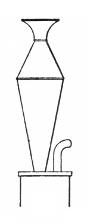

|
Krummhornregal German |
This stop is described only by Audsley, who provides the illustration reproduced here and says: �the tone of [the Krummhornregal] is said to have resembled that of the old Krummhorn�. Irwin mentions it only in passing with no description. The ancient instrument known as the krummhorn is a capped reed instrument whose tone is muffled and buzzy, not at all like the Krummhorn of the organ, whose tone resembles that of the clarinet.
See Regal.All known examples are given below.
Krummhornregal 8', Brust; Augustana Lutheran Church, Sioux Falls, South Dakota, USA; Steiner 1977. (The stop is the only one on its manual.)
Krummhorn Regal 8', Brustwerk; Matthews Memorial Presbyterian Church, Albany, Texas, USA; Hofmann 1955/56. (Pipes by Flentrop.)
Krummhorn Regal 8', Brustpositiv; Canterbury University, Christchurch, New Zealand; Croft.
|
Original site compiled by Edward L. Stauff. For educational use only. Krummhornregal.html - Last updated 10 January 2001. |
Home Full Index |